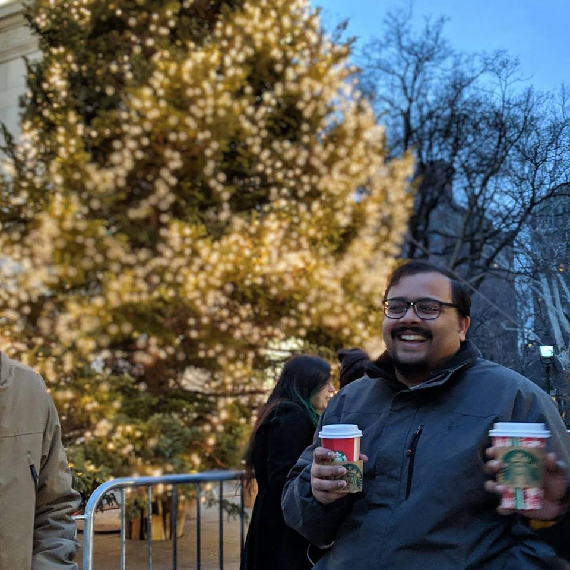

Nikhil S. Mande About me
I am a postdoctoral researcher in the Algorithms and Complexity Group at CWI, and am hosted by Ronald de Wolf. Before this, I was a postdoctoral researcher in the Department of Computer Science at Georgetown University, where I was hosted by Justin Thaler.
Before that, I was a research scholar in the School of Technology and Computer Science at TIFR Mumbai, where Arkadev Chattopadhyay was my advisor. A bio (last updated November 2022) can be found here.
Education
Ph.D. in Computer Science in 2018 from the Tata Institute of Fundamental Research, Mumbai.
- Awarded TAA-Sasken Best Thesis Award for 2018-2019.
M.Sc. in Applications of Mathematics (with a specialization in Computational Mathematics) in 2013 from Chennai Mathematical Institute, Chennai
- Awarded CMI Gold Medal of Excellence.
B.Math. (Hons.) in 2010 from Indian Statistical Institute, Bangalore Research interests
I am broadly interested in the area of computational complexity theory. More specifically, I have an interest in (classical and quantum)(query complexity and communication complexity), approximation theory, quantum computing, Boolean circuit complexity, and the connections between them.
Theses and projects
- My Ph.D. thesis is titled "Communication Complexity of XOR Functions". A version can be found here.
- Project as part of Ph.D. credits requirement titled "On the complexity of powering over finite fields in constant depth circuits" at TIFR under the guidance of Arkadev Chattopadhyay in Aug 2014-Feb 2015.
- Master's thesis titled "Spectral Graph Theory" at CMI under the guidance of Prajakta Nimbhorkar in Jan 2013 - Apr 2013.
- Project titled "Minimum variance hedging of American and European options using the binomial model" at TCS, Hyderabad under the guidance of M. Vidyasagar in the summer of 2009. Sponsored by the Indian Academy of Sciences.
Publications
All of my papers are available in the public domain: either on arXiv, or on ECCC, or on both.
- New: "Lifting to Parity Decision Trees via Stifling", with Arkadev Chattopadhyay, Swagato Sanyal and Suhail Sherif
ECCC report, arXiv preprint
ITCS 2023
- New: "Improved Quantum Query Upper Bounds Based on Classical Decision Trees", with Arjan Cornelissen and Subhasree Patro, 2022
arXiv preprint
FSTTCS 2022
TQC 2022 (workshop track)
- "One-Way Communication Complexity and Non-Adaptive Decision Trees", with Swagato Sanyal and Suhail Sherif
arXiv preprint
STACS 2022
- "Symmetry and Quantum Query-to-Communication Simulation", with Sourav Chakraborty, Arkadev Chattopadhyay, Peter Høyer, Manaswi Paraashar and Ronald de Wolf
arXiv preprint
STACS 2022
- "Tight Chang's-Lemma-Type Bounds for Boolean Functions", with Sourav Chakraborty, Rajat Mittal, Tulasimohan Molli, Manaswi Paraashar and Swagato Sanyal
arXiv preprint
FSTTCS 2021
- "On Parity Decision Trees for Fourier-Sparse Boolean Functions", with Swagato Sanyal
ECCC report, arXiv preprint
FSTTCS 2020
- "Quantum Query-to-Communication Simulation Needs a Logarithmic Overhead", with Sourav Chakraborty, Arkadev Chattopadhyay and Manaswi Paraashar
ECCC report, arXiv preprint
CCC 2020
QIP 2020
- "Improved Approximate Degree Bounds For k-distinctness", with Justin Thaler and Shuchen Zhu
ECCC report, arXiv preprint
TQC 2020
- "Lower Bounds for Linear Decision Lists", with Arkadev Chattopadhyay, Meena Mahajan and Nitin Saurabh
ECCC report, arXiv preprint
CJTCS, 2020
- "Approximate Degree, Secret Sharing, and Concentration Phenomena", with Andrej Bogdanov, Justin Thaler and Christopher Williamson
ECCC report, arXiv preprint
RANDOM 2019
- "Sign-Rank Can Increase Under Intersection", with Mark Bun and Justin Thaler
ECCC report, arXiv preprint
ICALP 2019
- "The Log-Approximate-Rank Conjecture is False", with Arkadev Chattopadhyay and Suhail Sherif
ECCC report
STOC 2019
Journal of the ACM, 2020
Invited talk at HALG 2020
- "A Short List of Equalities Induces Large Sign Rank", with Arkadev Chattopadhyay
(An earlier version was titled "Weights at the Bottom Matter When the Top is Heavy".)
ECCC report, arXiv preprint
FOCS 2018
SICOMP 2022
- "A Lifting Theorem with Applications to Symmetric Functions", with Arkadev Chattopadhyay
FSTTCS 2017
- "Separation of Unbounded-Error Models in Multi-Party Communication Complexity", with Arkadev Chattopadhyay
(An earlier version was titled "Small Error Versus Unbounded Error Models in the NOF Model".)
ECCC report
ToC 2018Preprints
- "Exact Quantum Query Complexity of Computing Hamming Weight Modulo Powers of Two and Three", with Arjan Cornelissen, Māris Ozols and Ronald de Wolf, 2021
arXiv preprint
- "Tight Bounds for the Randomized and Quantum Communication Complexities of Equality with Small Error", with Ronald de Wolf, 2021
ECCC report, arXiv preprint
- "Dual Polynomials and Communication Complexity of XOR Functions", with Arkadev Chattopadhyay, 2017 (This is an extended version of "A Lifting Theorem with Applications to Symmetric Functions.")
ECCC report, arXiv preprintExtracurricular activities
- I enjoy speedcubing. I have been associated with the World Cube Association as a member of the WCA Regulations Committee, and earlier as the senior delegate for South East Asia and India. An achievement I'm particularly proud of is being the first Indian to officially solve a Rubik's cube blindfolded in under a minute (including memorization time). I've held several national records in the past in the events of solving 3x3 blindfolded, 4x4 blindfolded, 5x5 blindfolded, multiple 3x3's blindfolded, and fewest moves challenge. My full speedcubing profile can be found here.
- I have been a member of the CWI PhD Activity Committee.
- I have been a member of the Science Popularization and Public Outreach Committee of TIFR.
- I enjoy playing lots of sports. Some of my favourites include volleyball, table tennis, ultimate frisbee, badminton, tennis.
- I enjoy playing Foosball.
- I (used to) enjoy playing Minesweeper in my free time. My best time is 74 seconds on the expert mode.
- I enjoy playing board games (thanks to RP for introducing them to me). You'll often find me online on BGA.
- I also have tons of other miscellaneous hobbies that might be too many to list here. Some include lindy hop, juggling, playing chess and playing PC games.
Contact
Email: nikhil DOT s DOT mande AT gmail DOT com
Links
DBLP
Google Scholar.
ECCC Fixes, an amazing extension by Suhail Sherif that opens ECCC PDF's in browser rather than downloading them, and also handles a bug in the report submission process. Also available for Firefox.
Interested in theoretical computer science research in Amsterdam? Check out this website.
Google scholar links of my mother, my father. Fun fact: All three of us have an Erdős number of 3 (under a liberal definition of Erdős number).
I no longer maintain my old website.